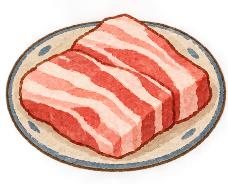
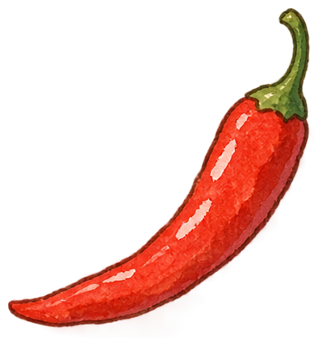
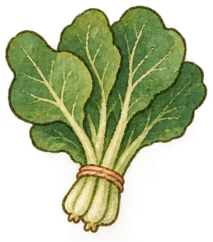
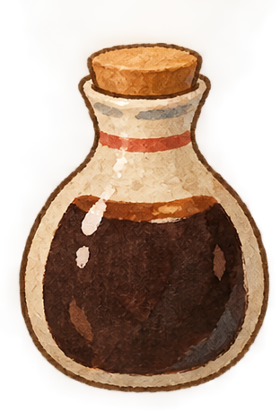
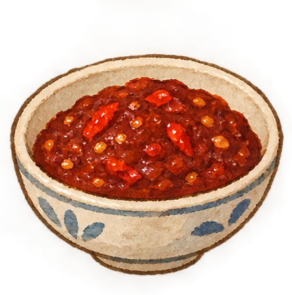

捏合拿起食材，移动到炒锅上松开





根据你加入的食材与调味生成本次成品。
行走：握拳保持前进，张开手掌停止。
转向：在镜像摄像头里只伸食指并明确横向指左 / 右，保持约半秒。
进入店铺：小熊走到店门口出现提示后，拇指与食指捏合并保持，才会进入店铺；V 手势不会触发进入。
第一人称烹饪：捏合左侧插画食材或右侧酱料拿起，保持捏合移动到中央炒锅后松开下料。捏合火候区可调火，捏合翻炒区或三指动作可翻炒。加入至少两样并翻炒后，点击“完成出锅”生成成品。
接入现有识别代码时，可调用 window.handleRecognizedGesture('walk') 等接口，不需要重新做摄像头识别。
window.handleRecognizedGesture('walk')